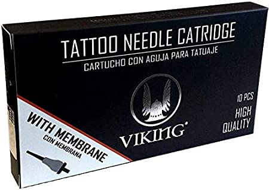

Productos recomendados
Agujas tatuaje kwadron
Para mi es la mejor marca agujas para tatuar. Las he probado con diferentes máquinas y con todas me funcionan increíblemente bien, tanto en línea como en relleno. Me gusta mucho que el cartucho sea transparente y poder ver la cantidad de tinta que queda o si está limpio.
Agujas tatuaje cheyenne
Los cartuchos Cheyenne también son una de las mejores marcas de agujas para tatuar. Me gusta mucho que con un esquema de colores saber qué tipo de aguja es a simple vista. También tienen su segunda marca (Cheyenne Craft), que son algo más económicas y para empezar son una muy buena opción.

Cartuchos tatuaje akira
Pese a no ser una marca del prestigio mundial de las anteriores, los cartuchos de Akira me parecen muy muy buenos. Lo mejor de estas agujas es su relación calidad precio.
Agujas tatuaje viking
Las agujas Viking son otra buena opción por su relación calidad precio. Las he usado y no tengo queja, la verdad.
